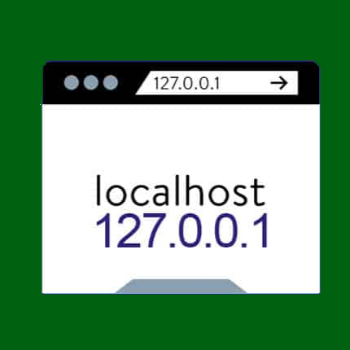

 Un servidor local es aquél servidor web almacenado en una red local al propio equipo de referencia. Nos ayudará a ejecutar elementos o programación web en nuestro pc, ya sean archivos php, html, javaScript,ect. También nos permitirá almacenar todos esos datos y/o elementos mediante MySQL(Un sistema de base de datos) sin peligro a perder ningún progreso. No requiere de la contratación de ningún dominio (Ya que es 127.0.0.1), por lo que el disco duro hace las funciones de hosting. Básicamente un servidor local es como un lugar de almacenamiento orientado a recopilar únicamente los datos de tu sistema, con la intención de utilizarlos y solicitar nueva información a los usuarios. Es completamente configurable en remoto y ampliable, ya que únicamente hay que modificar el hardware y/o software del equipo, actualizándolo periódicamente.
En el ámbito del desarrollo web resulta básico conocer el funcionamiento de un servidor local, ya que éste actuará de manera segura, sin perder ningún tipo de dato o información valiosa. Proporciona la confianza de poder realizar pruebas y trabajar sobre la página web sin peligro a perderla, y otra de sus grandes cualidades es que permite también que se realicen copias de seguridad sobre esta en cualquier momento.
| Ventajas | Desventajas |
|---|
|
|